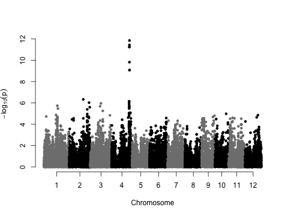
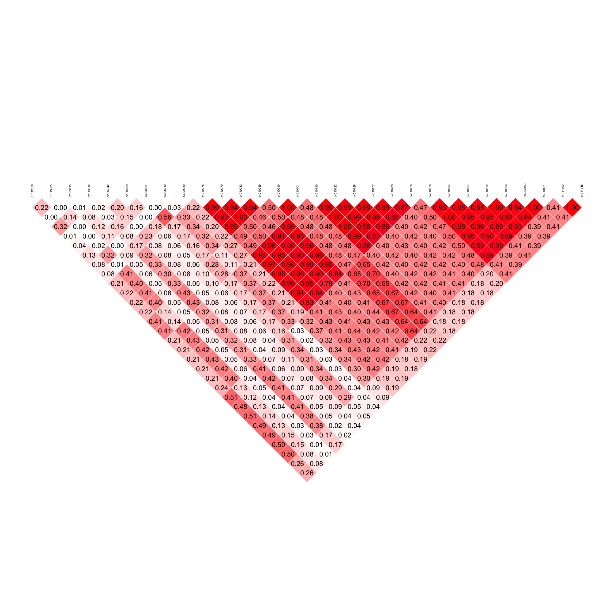
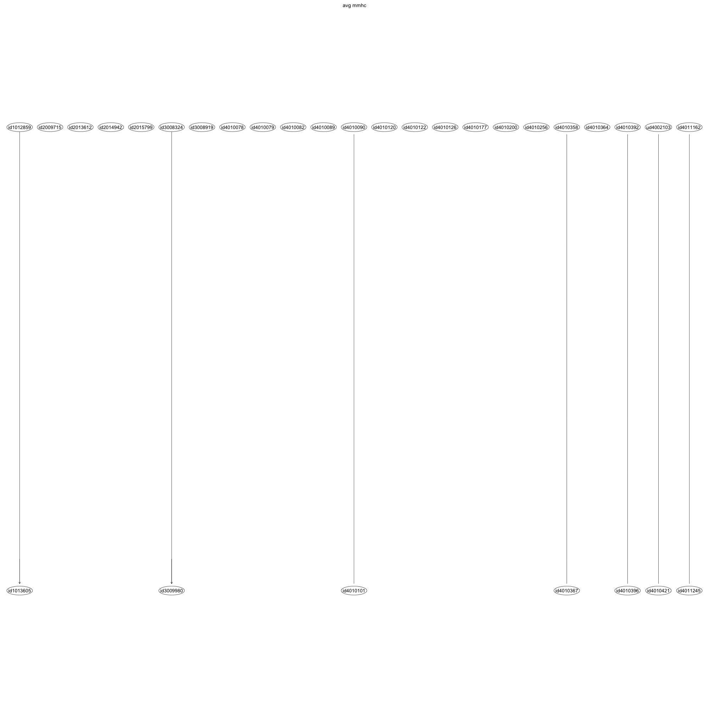

Visualizing LD with Bayesian Networks
The purpose of this exercise is to characterize LD using a BN approach, and compare the results from the BN with the a conventional pairwise measure of LD. ## GWAS This GWAS is following the same workflow provided by Dr. Iwata. For a more detailed description see his exercises. Here, we will use the PLINK formatted genotypes instead of the VCF formatted genotypes. Both the phenotypic and genotypic data should be in the Data.zip file.
Load data
GWAS
We will use some phenotypic data from RDP1 for Na+, K+, and Na+:K+ content in the roots and shoots. The study is described indepth in Campbell et al (2017). For GWAS we will focus on Na+ content in the roots.
# First makes sure the order of lines in the phenotypic data matches the
# genotypic data.
pheno <- pheno[match(geno@ped$id, row.names(pheno)), ]
sum(row.names(pheno) == geno@ped$id)
# add phenotypic data to the bed matrix
geno@ped$pheno <- pheno[geno@ped$id, "Na.Root"]
# Remove missing data and clean up the SNP data
geno <- select.inds(geno, !is.na(geno@ped$pheno))
geno <- select.snps(geno, maf > 0.05)
geno <- select.snps(geno, callrate > 0.9)
# Create the GRM
grm <- GRM(geno)
# Run GWAS
gwa <- association.test(geno, method = "lmm", response = "quantitative", test = "lrt",
eigenK = eigen(grm), p = 4)# Manhattan plot for root Na
png("man.png", width = 480, height = 480 * 0.75)
par(mar = c(5.1, 4.1, 4.1, 2.1), mgp = c(3, 1, 0), las = 0)
manhattan(gwa, pch = 20)
dev.off()Notice a major peak on chromosome 4 and a few minor peaks on other chromosomes.

Select only the top SNPs for further analysis. This will make it much easier to visualize LD.
Calculate LD
top.snps <- top.snps[order(top.snps$chr, top.snps$pos), ]
LD_topsnps <- LD(select.snps(geno, id %in% top.snps$id), lim = c(1, nrow(top.snps)))png("LDplot.png", width = 2000, height = 2000)
par(mar = c(5.1, 4.1, 4.1, 2.1), mgp = c(3, 1, 0), las = 0)
LD.plot(LD_topsnps, cex.snp = 0.8)
dev.off()
Bayesian network to visualize LD
Now, we’ll use two different types of algorithms for structure learning, a hybrid method (max min hill climb) and a score-based approach (Tabu).
Subset the top SNPs from GWAS
Constraint-based algorithm: Max min hill climb
MMHC learns the skeleton of the network first using the max-min parent children (MMPC) algorithm, and directs the edges using a hill-climbing approach.
# convert all columns to a factor and output a dataframe
top.geno_fact <- as.data.frame(apply(top.geno, 2, as.factor))
top.mmhc <- mmhc(x = top.geno_fact)png("mmhc1.png", h = 2000, w = 2000)
graphviz.plot(top.mmhc, shape = "ellipse", main = "mmhc")
dev.off()
bn.learn class: List with three sublists. The first list learning contains the information about the results of the learning algorithm (whitelist, blacklist, type of test, etc). The next nodes is a list that contains the Markov blanket (mb) for each node, the neighborhood (nbr) for each node, and the parents and children of the node. The final one is a dataframe that containts the arcs (pairwise links) for the graph.
Score-based algorithm: Tabu
Tabu basically starts with a network structure and modifies the structure by adding, removing, or reversing arcs to maximize the score.
Compare approaches
png("tabu1.png", h = 2000, w = 2000)
graphviz.plot(top.tabu, shape = "ellipse", main = "tabu")
dev.off()
Bootstrapping
The idea is to improve the structure learned from data by doing the structure learning step many times on a subset of the samples, and to average over these many structures to find a ‘consensus’ structure.
MMHC
Here, we set the number of boot strapping samples to 500. So, we’ll generate 500 (R=500) structures, and calculate the frequency of pairwise relationships and directions.
set.seed(8)
boot_mmhc <- boot.strength(top.geno_fact, algorithm = "mmhc", R = 500) #for the mmhc algorithm
head(boot_mmhc)
# select pairs with strong linkages
boot_mmhc[boot_mmhc$strength >= 0.85, ]This is where we average over the structures. Before doing so, we want to retain only the relationships that we see most often (85% of the structures).
Compare LD, MMHC and averaged MMHC networks

Tabu
And we’ll do just the same for Tabu…
Compare LD, tabu and averaged tabu networks

Bayesian Networks for multitrait studies
One nice application for BN is to examine the probabilistic dependencies between multiple traits. Topner et al (2017) and Yu et al (2018) are pretty nice examples of using BN for multitrait studies. Here, we’ll use the same phenotypic dataset that we used for GWAS and for MTM and BN.
MTM
See Diego’s code for a much more thorough explaination of whats going on here.
Load data
rm(list = ls())
pheno <- read.csv("salt_phenotypes.csv", row.names = 1)
pheno.na <- na.omit(pheno)
dim(pheno.na)[1] 366 7Reading /Users/malachycampbell/Documents/Dropbox/Work/Presentations/Japan/BN/Data/sativas413.fam
Reading /Users/malachycampbell/Documents/Dropbox/Work/Presentations/Japan/BN/Data/sativas413.bim
Reading /Users/malachycampbell/Documents/Dropbox/Work/Presentations/Japan/BN/Data/sativas413.bed
ped stats and snps stats have been set.
'p' has been set.
'mu' and 'sigma' have been set.Create the GRM
pheno.na <- pheno.na[match(geno@ped$id, row.names(pheno.na)), ]
sum(row.names(pheno.na) == geno@ped$id)[1] 363MTM model
Y <- scale(pheno.na, center = T, scale = T)
A <- grm
fmU <- MTM(Y = Y, K = list(list(K = A, COV = list(type = "UN", df0 = 7, S0 = diag(7)))),
resCov = list(type = "UN", S0 = diag(7), df0 = 7), nIter = 1200, burnIn = 200,
thin = 5, saveAt = "MTM_salt")We’ll get the genetic values here.
# fmU$YHat # predicitons fmU$resCov$R # residual covariance matrix
# fmU$K[[1]]$G # genetic covariance matrix
salt_u <- as.data.frame(fmU$K[[1]]$U) # random effects
colnames(salt_u) <- names(pheno.na)For BN we assume that all samples are independent. Is this the case in our data set?
# Cholesky decomposition of G
Linv <- solve(t(chol(grm)))
Minv <- kronecker(diag(7), Linv)
salt_u <- c(as.matrix(salt_u)) #turn the dataframe of genetic values to one long vector
salt_u_star <- matrix(Minv %*% salt_u, nrow = 363, ncol = 7) #These are our adjusted breeding values. This will just put them in a nice n x t matrix
colnames(salt_u_star) <- names(pheno.na)
rm(salt_u)We can decompose \(\mathbf{G}\) into its Cholesky factors \(\mathbf{G} = \mathbf{L} \mathbf{L'}\). Here, \(\mathbf{L}\) is an \(n \times n\) lower triangular matrix. For a single trait we could remove the dependancy from our breeding values \(\mathbf{u}\) yielding the adjusted breeding values \(\mathbf{u^*}\) by \(\mathbf{u^*} = \mathbf{L^{-1}} \mathbf{u}\). However, since we have multiple traits, \(\mathbf{u}\) is \((n \times t) \times 1\), where \(t\) is the number of traits. So, we will construct a \((n \times t) \times (n \times t)\) matrix \(\mathbf{M^{-1}} = \mathbf{I_{(n \times t) \times (n \times t)}} \otimes \mathbf{L^{-1}}\). Now, \(\mathbf{u^*} = \mathbf{M^{-1}} \mathbf{u}\)
Structure Learning
Constraint-based algorithm: Grow shrink (GS)

Placing restrictions on the network
If we have some knowledge of what the network should look like, we can place restrictions on the relationships in the network. BNlearn uses the terms blacklist and whitelist to describe what nodes shouldn’t or should be linked respectively.
# Blacklist example 1 Place some constraints on the DAG
tiers <- list("Na.K.Shoot", names(salt_u_star)[c(2:7)])
blklist <- tiers2blacklist(tiers)
## Eliminate all nodes leading to Na.K.Shoot
gs2 <- gs(salt_u_star, blacklist = blklist)
graphviz.plot(gs2, main = "Blklst1", shape = "ellipse")
# Blacklist example 2 Place some constraints on the DAG
tiers <- list("K.Root.Salt", names(salt_u_star)[c(1:6)])
blklist <- tiers2blacklist(tiers)
## Eliminate all nodes leading to Na.K.Root
gs3 <- gs(salt_u_star, test = "cor", alpha = 0.05, blacklist = blklist)
graphviz.plot(gs3, main = "Blklst2", shape = "ellipse")
Hybrid-based algorithm: Max-min hill climbing (MMHC)

Compare structures from GS and MMHC
graphviz.plot(mmhc1, main = "MMHC1", shape = "ellipse")
graphviz.plot(gs1, main = "GS", shape = "ellipse")

Very similar structures, but the directions are differnent. How confident can we be about the direction of the edges?
Model averaging
Bootstrap resampling
MMHC
set.seed(8)
boot_mmhc <- boot.strength(salt_u_star, algorithm = "mmhc", R = 500) #for the mmhc algorithm
head(boot_mmhc) from to strength direction
1 Na.K.Shoot Na.Shoot 1.000 0.9680000
2 Na.K.Shoot K.Shoot.Salt 0.124 0.7419355
3 Na.K.Shoot K.Shoot.Control 0.000 0.0000000
4 Na.K.Shoot Na.K.Root 1.000 0.5190000
5 Na.K.Shoot Na.Root 0.014 0.9285714
6 Na.K.Shoot K.Root.Salt 0.010 0.5000000 from to strength direction
1 Na.K.Shoot Na.Shoot 1.000 0.9680000
4 Na.K.Shoot Na.K.Root 1.000 0.5190000
7 Na.Shoot Na.K.Shoot 1.000 0.0320000
8 Na.Shoot K.Shoot.Salt 1.000 0.0330000
14 K.Shoot.Salt Na.Shoot 1.000 0.9670000
15 K.Shoot.Salt K.Shoot.Control 1.000 0.4820000
21 K.Shoot.Control K.Shoot.Salt 1.000 0.5180000
25 Na.K.Root Na.K.Shoot 1.000 0.4810000
29 Na.K.Root Na.Root 1.000 0.5890000
30 Na.K.Root K.Root.Salt 0.954 0.5503145
35 Na.Root Na.K.Root 1.000 0.4110000
36 Na.Root K.Root.Salt 1.000 0.4530000
41 K.Root.Salt Na.K.Root 0.954 0.4496855
42 K.Root.Salt Na.Root 1.000 0.5470000GS
boot_gs <- boot.strength(salt_u_star, algorithm = "gs", algorithm.args = list(test = "cor",
alpha = 0.05), R = 500) #for the gs algorithm
boot_gs[boot_gs$strength >= 0.85, ] from to strength direction
1 Na.K.Shoot Na.Shoot 1.000 0.9030000
4 Na.K.Shoot Na.K.Root 1.000 0.4480000
7 Na.Shoot Na.K.Shoot 1.000 0.0970000
8 Na.Shoot K.Shoot.Salt 1.000 0.1100000
14 K.Shoot.Salt Na.Shoot 1.000 0.8900000
15 K.Shoot.Salt K.Shoot.Control 1.000 0.5080000
21 K.Shoot.Control K.Shoot.Salt 1.000 0.4920000
25 Na.K.Root Na.K.Shoot 1.000 0.5520000
29 Na.K.Root Na.Root 1.000 0.4670000
30 Na.K.Root K.Root.Salt 0.998 0.5551102
35 Na.Root Na.K.Root 1.000 0.5330000
36 Na.Root K.Root.Salt 1.000 0.5580000
41 K.Root.Salt Na.K.Root 0.998 0.4448898
42 K.Root.Salt Na.Root 1.000 0.4420000Model averaging


Comparing DAGs from model averaging
graphviz.plot(ave_model_gs, main = "Avg GS", shape = "ellipse")
graphviz.plot(ave_model_mmhc, main = "Avg MMHC", shape = "ellipse")